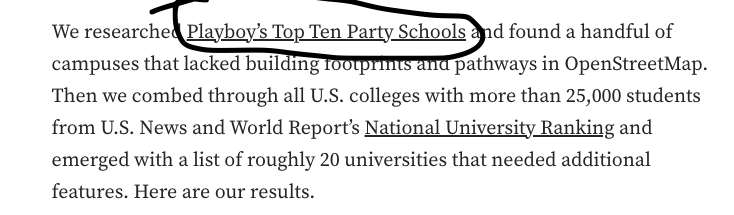
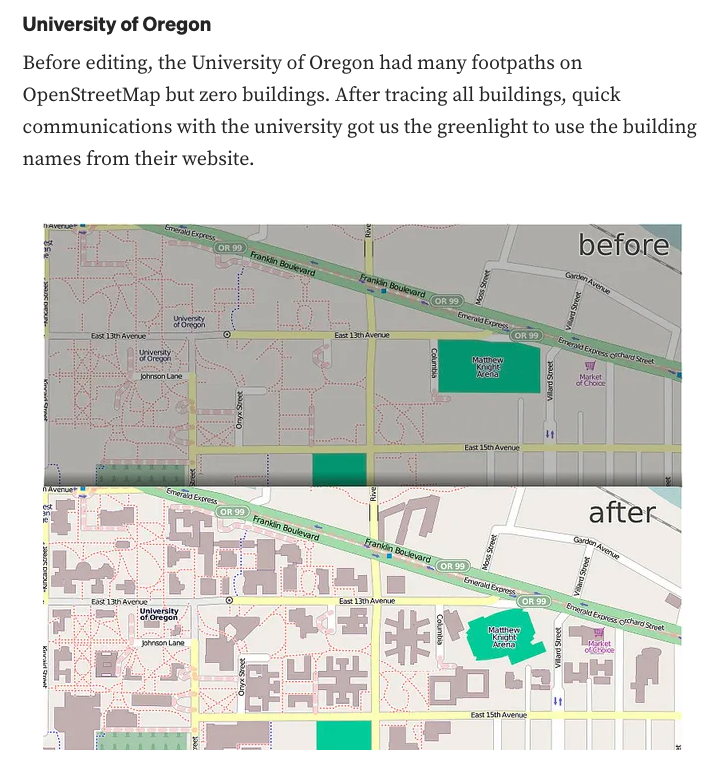
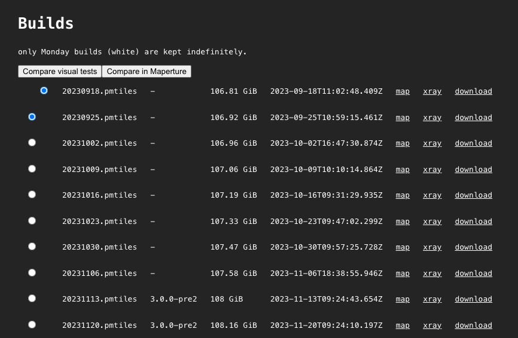
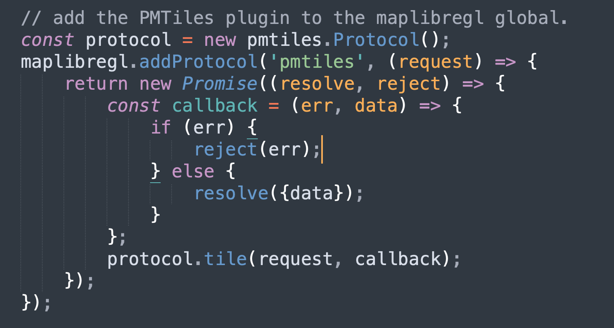
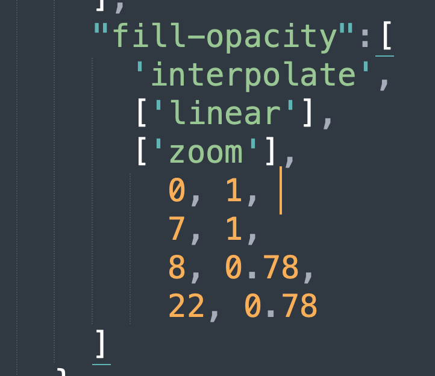
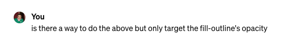
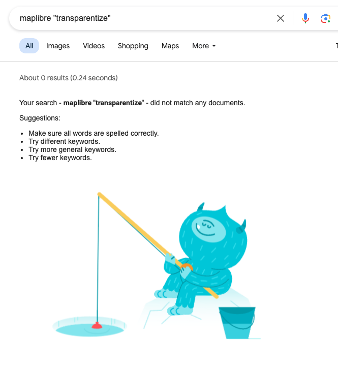

Very cool to be here because I used to come to GeoDC a long time ago. Anyone here work at Mapbox? I interned right when it switched over from devseed to mapbox.
Party on

https://blog.mapbox.com/open-mapping-coming-to-a-campus-near-you-7e375a4dc739

Any university of Oregon grads here?
Slippy maps terrify me
I used to do a lot of slippy maps in the early days of (free) mapbox.

It's kinda hard to find, and of course its a big ass download. beware. But it is the whole world, downloaded every monday
From there, Brent filtered to the continental US. Go Brent. Ask Brent how. idk
Kudos to my teammate Brent Jones, based out of St. Louis, who was able to make heads and tales of all this
Next, we just put the pmtiles into an S3 bucket.
Okay, $ talk:
And check out how cheap it is, by comparison to other options
Then using MapLibre GL JS, add the PMTiles protocol

Again, thanks Brent for your spelunking
Now the fun part
Styling
With Maplibre/Mapbox's style spec
🤢
Maputnik is a great place to start
just use the default, and then attach the wires on your end
Who doesn't want to write this sort of code:

But our friend the 🤖 helps A LOT
Occasionally, it will lie to you

I don't think this exists, and that's why it lied to me.
transparentize is a css function that exists in sass, but as far as I can tell, not in mapbox or maplibre

Correct me if I'm wrong.
But after styling OSM with maputnik
And our data with help from 🤖
You get a pretty, customizable, fast and CHEAP map
(oh psst: quick aside, I didn't go into the data that we are layering in here...We pre processed it in QGIS and then converted to pmtiles with tippacanoe. And I'm not going to tell you what it contains because we haven't launched yet but it's going to be cool...stay tuned. 2 weeks)
anyway...
Questions? Thoughts? Comments? Suggestions?
dwood@npr.org
@danielpwwood (but its a 🗑️🔥)
Thanks